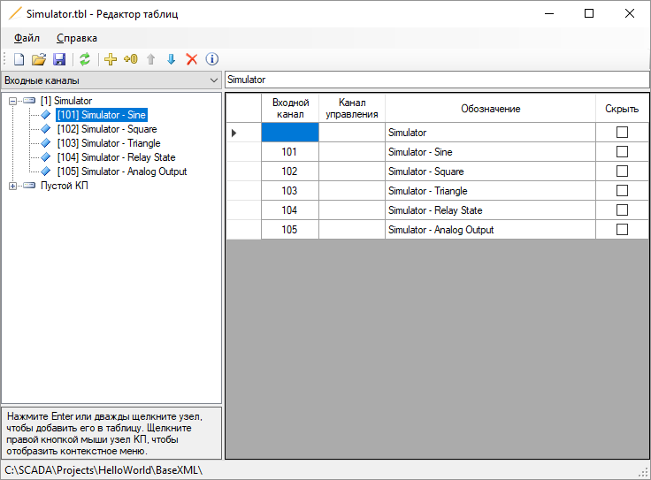

Приложение Редактор таблиц предназначено для создания табличных представлений, которые отображаются на рабочей станции оператора. Редактор таблиц используется инженерами в процессе конфигурирования Rapid SCADA.

Рис. 1. Приложение Редактор таблиц
В левой части окна программы можно выбрать каналы из базы конфигурации и добавить их в табличное представление. Содержимое редактируемого табличного представления показывается в правой части окна. Скрытые элементы не отображаются веб-интерфейсе приложения Вебстанция, но учитываются при фильтрации событий по представлению.
Редактор таблиц удобно вызывать из приложения Администратор, дважды щелчкнув по узлу редактируемой таблицы в проводнике проекта. В строке состояния Редактора таблиц отображается путь к базе конфигуации проекта, в котором расположена редактируемая таблица.